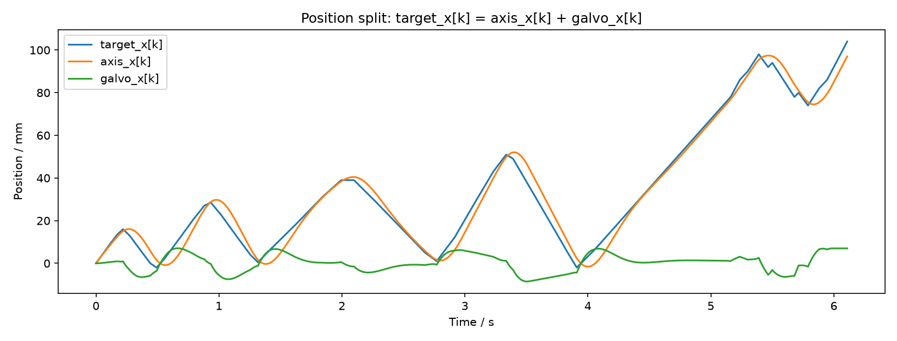
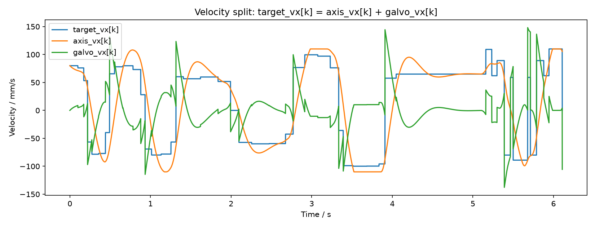
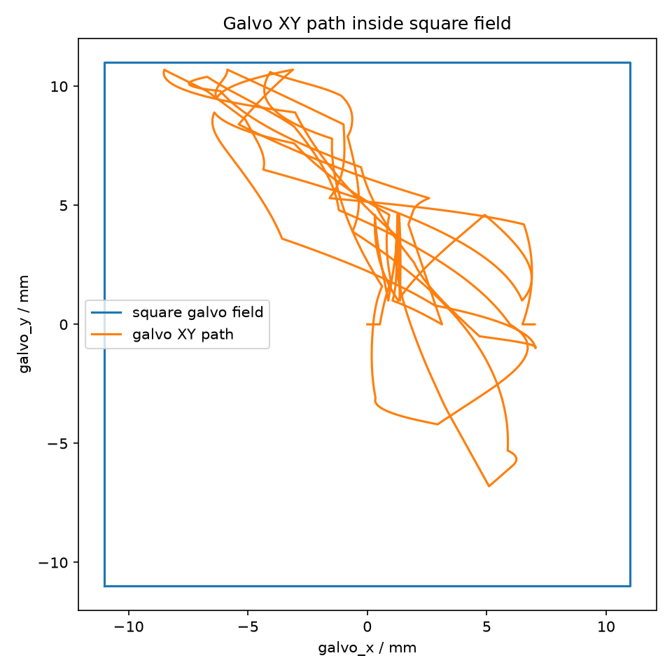
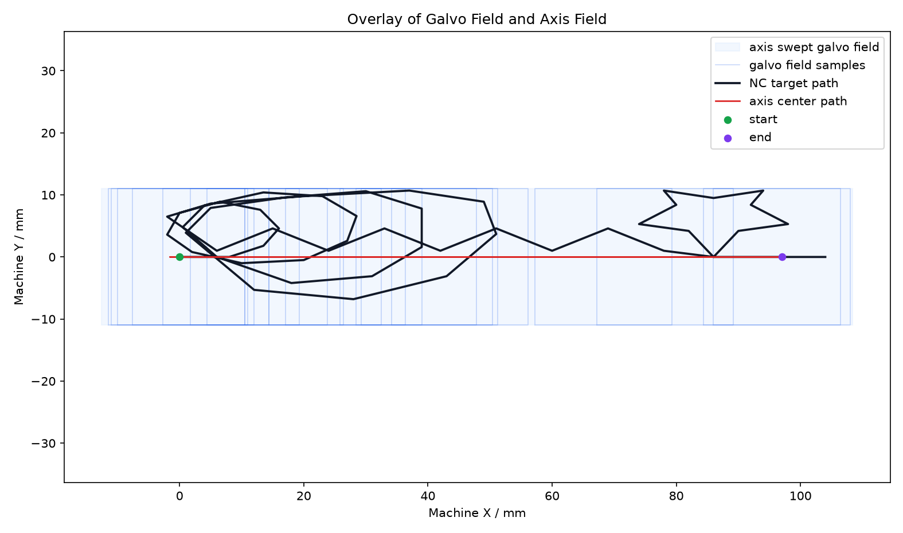
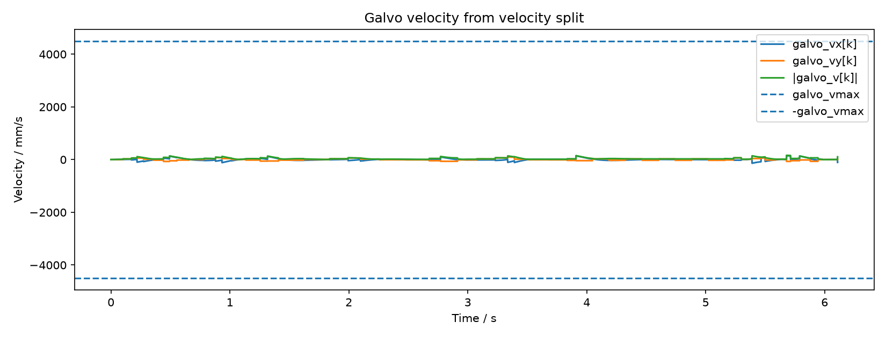
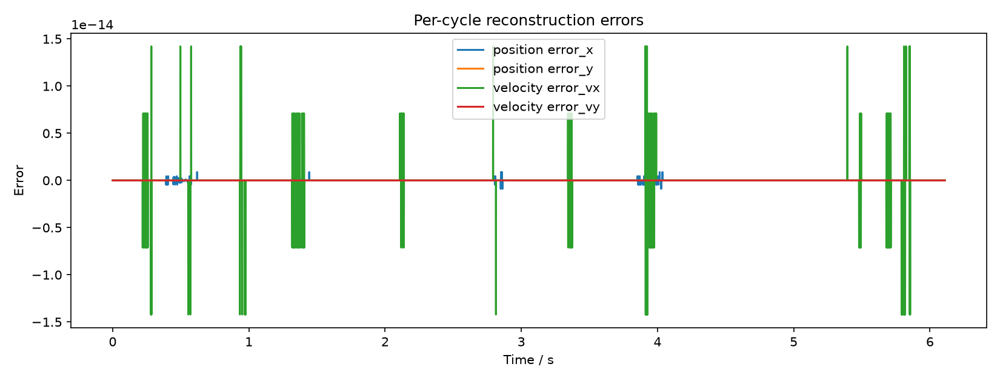
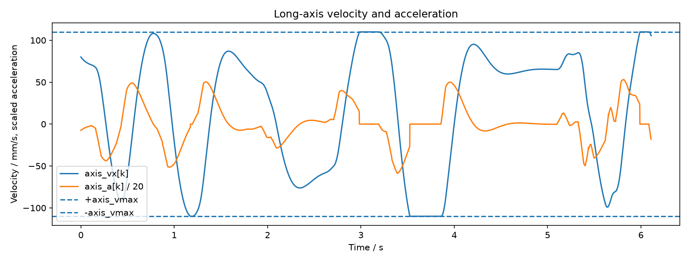
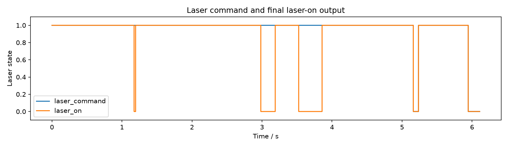

This demo reads an NC/G-code file, interpolates fixed-cycle target position and velocity, then splits the X motion between the long axis and the galvo. The final laser output is enabled only when the NC laser command is on and all motion constraints are satisfied.
complex_position_velocity_joint_mpc_input.nc1000 us611060 samples, 60.0 mstarget_x[k] = axis_x[k] + galvo_x[k]target_y[k] = galvo_y[k]target_vx[k] = axis_vx[k] + galvo_vx[k]target_vy[k] = galvo_vy[k]110.0 mm/s110.0 mm/s / 1800.0 mm/s^2+/-11.0 mm4500.0 mm/s8.882e-161.421e-148.523 mm10.700 mm148.2 mm/s93.3 mm/s163.0 mm/s110.000 mm/s1175.205 mm/s^258715309






